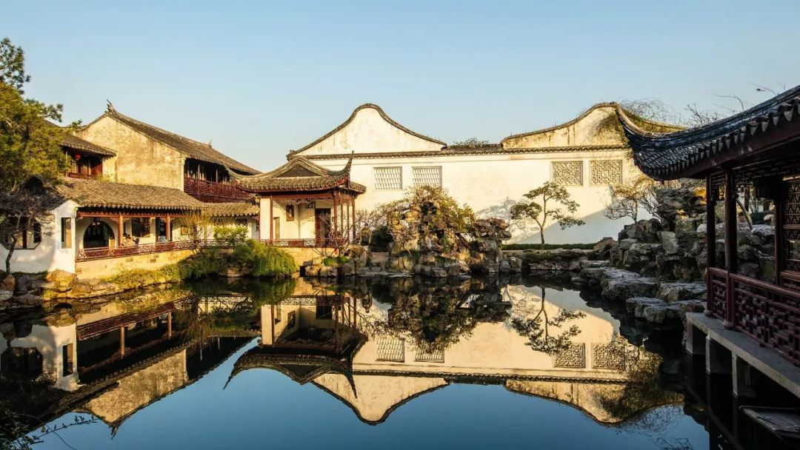

| 返回首页 |
|---|
| 徽派 | 闽派 | 京派 | 苏派 | 晋派 | 川派 |
|---|
【苏派建筑】
山环水绕、曲径通幽
苏派建筑的美
存在于有数千年历史的苏州园林中
脊角高翘的屋顶
江南风韵的门楼
曲折蜿蜒，藏而不露
饲鸟养鱼、叠石迭景
堪称园林式布局的艺术典范
苏派建筑是江浙一带的建筑风格
是南北方建筑风格的集大成者
园林式布局是其显著特征之一
脊角高翘的屋顶
江南风韵的走马楼、砖雕门楼、明瓦窗、过街楼
轻巧简洁、古朴典雅
体现出清、淡、雅、素的艺术特色
充满了江南水乡古朴沉静的意味
中国古典园林讲究曲折蜿蜒，藏而不露
置身其中
四周流淌着的是
“曲径通幽处，禅房花木深”
“万籁此俱寂，但余钟磬音”之感
直露中有迂回
舒缓处有起伏
让人回味无穷
多少中国人想拥有一处苏州宅院
作为老来闲适之所
邀三两好友，吃茶聊天写字，最好不过了！